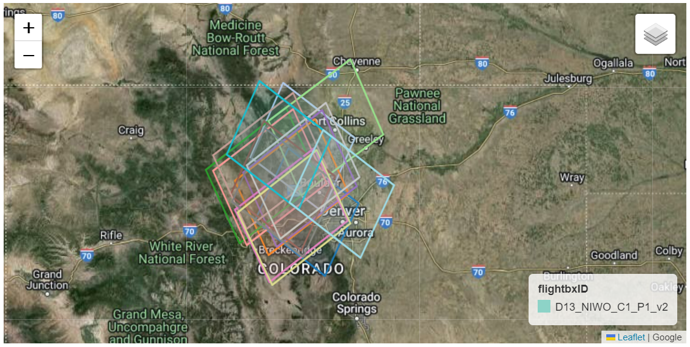
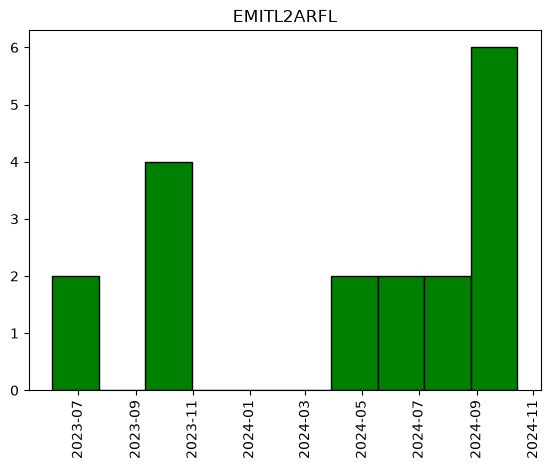
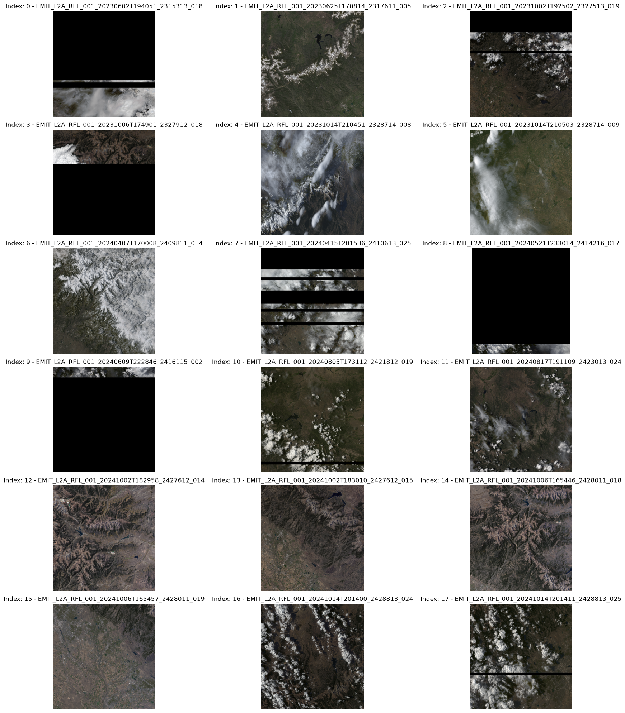
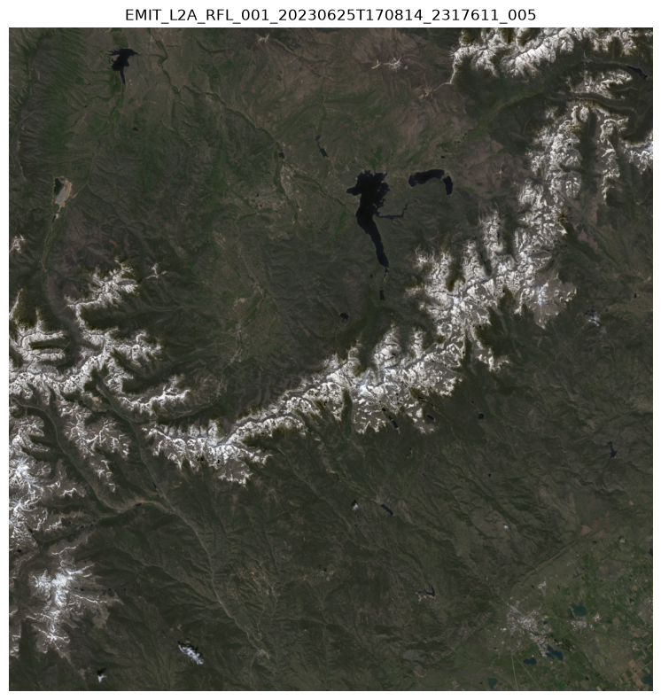

# Import required libraries
import os, sys
import dotenv
import folium
import earthaccess
import warnings
import folium.plugins
import pandas as pd
import geopandas as gpd
import math
import requests
import neonutilities as nu
from zipfile import ZipFile
from branca.element import Figure
from IPython.display import display
from shapely import geometry
from skimage import io
from datetime import timedelta
from shapely.geometry.polygon import orient
from matplotlib import pyplot as plt1 Finding Co-located EMIT and NEON AOP Data
Summary
The Earth surface Mineral dust source InvesTigation (EMIT) instrument is located on the International Space Station (ISS) and has collected data over a large area of the Continental US. The National Ecological Observatory Network (NEON) Airborne Observation Platform (AOP) collects aerial remote sensing data, including hyperspectral reflectance data over sites across the United States and Puerto Rico. In this notebook we will show how to utilize the earthaccess Python library to find spatially overlapping EMIT and NEON reflectance data at NEON’s Niwot Ridge site (NIWO) in the Rocky Mountains of Colorado.

Background
The EMIT instrument is an imaging spectrometer that measures light in visible (V) to short-wave (SWIR) infrared wavelengths; this is also referred to as a VSWIR sensor. These measurements display unique spectral signatures that correspond to the composition on the Earth’s surface. The EMIT mission focuses specifically on mapping the composition of minerals to better understand the effects of mineral dust throughout the Earth system and human populations now and in the future. In addition, the EMIT instrument can be used in other applications, such as mapping of greenhouse gases, snow properties, and water resources.
More details about EMIT and its associated products can be found on the EMIT website and EMIT product pages hosted by the LP DAAC.
The NEON Imaging Spectrometer (NIS) is an airborne imaging spectrometer built by JPL (AVIRIS-NG) and operated by the National Ecological Observatory Network’s (NEON) Airborne Observation Platform (AOP). NEON’s hyperspectral sensors collect measurements of sunlight reflected from the Earth’s surface in 426 narrow (~5 nm) spectral channels spanning wavelengths between ~ 380 - 2500 nm. NEON’s remote sensing data is intended to map and answer questions about a landscape, with ecological applications including identifying and classifying plant species and communities, mapping vegetation health, detecting disease or invasive species, and mapping droughts, wildfires, or other natural disturbances and their impacts.
NEON surveys sites spanning the continental US, during peak phenological greenness, capturing each site 3 out of every 5 years, for most terrestrial sites. AOP’s Flight Schedules and Coverage provide’s more information about the current and past schedules.
More detailed information about NEON’s airborne sampling design can be found in the paper: Spanning scales: The airborne spatial and temporal sampling design of the National Ecological Observatory Network.
Requirements
- NASA Earthdata Account
- No Python setup requirements if connected to the workshop cloud instance!
- Local Only Set up Python Environment - See setup_instructions.md in the /setup/ folder to set up a local compatible Python environment
- NEON User Account and API Token, see NEON API Tokens Tutorial
Download the NEON Flight Boundary Shapefile: AOP_flightBoxes.zip
Learning Objectives
- Use functions provided in an external Python module to find and download available NEON airborne reflectance data. - Use earthaccess to find EMIT data that overlaps with a NEON site. - How to export a list of files and download them programmatically.
Tutorial Outline
- Setup - NEON and NASA data accounts
- Visualize and download NEON data for a single site
- Find Co-located EMIT collections and download
1. Setup
Import the required Python libraries. You can install the Python neonutilities package using !pip install neonutilities. This package will allow you to find available NEON data and download NEON Airborne Observation Platform (AOP) data, using the NEON API.
1.2 NEON Token
Please see Using an API Token when Accessing NEON Data with neonUtilities for more details on setting up a NEON token. As of mid-2026 tokens will be required for downloadng NEON data.
Once you’ve set up your account and generated a token, you can use the python-dotenv package to store the token and access it in Python. If this is the first time you’re setting this up, uncomment the next cell, paste your token in the value_to_set argument and store it locally.
# dotenv.set_key(dotenv_path=".env",
# key_to_set="NEON_TOKEN",
# value_to_set="YOUR TOKEN HERE")Load your NEON token.
dotenv.load_dotenv()Truetoken = os.environ.get("NEON_TOKEN")1.3 NASA Earthdata Login Credentials
To download or stream NASA data you will need an Earthdata account, you can create one here. We will use the login function from the earthaccess library for authentication before downloading at the end of the notebook. This function can also be used to create a local .netrc file if it doesn’t exist or add your login info to an existing .netrc file. If no Earthdata Login credentials are found in the .netrc you’ll be prompted for them. This step is not necessary to conduct searches but is needed to download or stream data.
2. Visualize and download NEON data for a single site
NEON data products are hosted on the NEON Data Portal, and can be accessed via an API. We will import a Python package neonutilities which includes some functions that interact with the NEON data API to see what data are available (in what year and months data were collected), and download data.
The EMIT products are hosted by the Land Processes Distributed Active Archive Center (LP DAAC). In this example we will use the cloud-hosted EMIT_L2A_RFL products available from the LP DAAC to find data.
To find data we will use the earthaccess Python library. earthaccess searches NASA’s Common Metadata Repository (CMR), a metadata system that catalogs Earth Science data and associated metadata records. The results can then be used to download granules or generate lists of granule search result URLs.
Using earthaccess we can search based on the attributes of a granule, which can be thought of as a spatiotemporal scene from an instrument containing multiple assets (ex: Reflectance, Reflectance Uncertainty, Masks for the EMIT L2A Reflectance Collection). We can search using attributes such as collection, acquisition time, and spatial footprint. This process can also be used with other EMIT products, other collections, or different data providers, as well as across multiple catalogs with some modification.
2.1 Define NEON Region of Interest (ROI)
For this example, our spatial region of interest (ROI) will be the NEON site Niwot Ridge (NIWO) in the Rocky Mountains, Colorado.
We will create a rectangular ROI surrounding the NIWO flight box. We will search for co-located EMIT data using a polygon rather than a standard bounding box in earthaccess. To search for intersections with a polygon using earthaccess, we need to format our ROI as a counterclockwise list of coordinate pairs.
Download, Unzip, and Open the shape file (.shp) containing the AOP flight box boundaries, which can be downloaded from NEON Spatial Data and Maps. Read this into a geodataframe, explore the contents, and check the coordinate reference system (CRS) of the data.
# function to download data stored on the internet in a public url to a local file
def download_url(url,download_dir):
if not os.path.isdir(download_dir):
os.makedirs(download_dir)
filename = url.split('/')[-1]
r = requests.get(url, allow_redirects=True)
file_object = open(os.path.join(download_dir,filename),'wb')
file_object.write(r.content)# Download and Unzip the NEON Flight Boundary Shapefile
neon_boundary_url = "https://www.neonscience.org/sites/default/files/AOP_flightBoxes_0.zip"
# Use download_url function to save the file to a directory
# os.makedirs('../../data', exist_ok=True)
download_url(neon_boundary_url,'../../data')
# Unzip the file
with ZipFile(f"../../data/{neon_boundary_url.split('/')[-1]}", 'r') as zip_ref:
zip_ref.extractall('../../data')aop_flightboxes = gpd.read_file("../../data/AOP_flightBoxes/AOP_flightboxesAllSites.shp")
aop_flightboxes.head()| domain | domainName | siteName | siteID | siteType | sampleType | priority | version | flightbxID | geometry | |
|---|---|---|---|---|---|---|---|---|---|---|
| 0 | D01 | Northeast | Bartlett Experimental Forest NEON | BART | Gradient | Terrestrial | 1 | 1 | D01_BART_R1_P1_v1 | POLYGON ((-71.33426 43.99197, -71.33423 44.081... |
| 1 | D01 | Northeast | Harvard Forest & Quabbin Watershed NEON | HARV | Core | Terrestrial | 1 | 1 | D01_HARV_C1_P1_v1 | POLYGON ((-72.14819 42.5751, -72.14776 42.3837... |
| 2 | D01 | Northeast | Harvard Forest & Quabbin Watershed NEON | HARV | Core | Terrestrial | 3 | 1 | D01_HARV_C1_P3_v1 | POLYGON ((-72.10812 42.43653, -72.14788 42.436... |
| 3 | D01 | Northeast | Lower Hop Brook NEON | HOPB | Core | Aquatic | 2 | 1 | D01_HOPB_C1_P2_v1 | POLYGON ((-72.36635 42.46399, -72.36635 42.514... |
| 4 | D19 | Taiga | Healy NEON | HEAL | Gradient | Terrestrial | 1 | 1 | D19_HEAL_R3_P1_v1 | POLYGON ((-149.31505 63.82981, -149.31505 63.9... |
aop_flightboxes.crs<Geographic 2D CRS: EPSG:4326>
Name: WGS 84
Axis Info [ellipsoidal]:
- Lat[north]: Geodetic latitude (degree)
- Lon[east]: Geodetic longitude (degree)
Area of Use:
- name: World.
- bounds: (-180.0, -90.0, 180.0, 90.0)
Datum: World Geodetic System 1984 ensemble
- Ellipsoid: WGS 84
- Prime Meridian: GreenwichThe CRS is EPSG:4326 (WGS84), which is also the CRS we want the data in to submit for our search of EMIT data.
Next, let’s examine the AOP flightboxes polygons further. For this exercise, we’ll first look at Niwot Ridge site in Colorado.
aop_flightboxes[aop_flightboxes.siteID == 'NIWO']| domain | domainName | siteName | siteID | siteType | sampleType | priority | version | flightbxID | geometry | |
|---|---|---|---|---|---|---|---|---|---|---|
| 49 | D13 | Southern Rockies & Colorado Plateau | Niwot Ridge NEON | NIWO | Core | Terrestrial | 1 | 2 | D13_NIWO_C1_P1_v2 | POLYGON ((-105.48908 40.07292, -105.48912 39.9... |
We can see the NIWO geodataframe consists of a single polygon, that we want to include in our study site (sometimes NEON sites may have more than one polygon, as there are sometimes multiple areas, with different priorities for collection).
# write this to a new variable called "niwo_polygon"
niwo_polygon = aop_flightboxes[aop_flightboxes.siteID == 'NIWO']
# subset to only include columns of interest
niwo_polygon = niwo_polygon[['domain','siteName','siteID','sampleType','flightbxID','priority','geometry']]# Create external boundary of the shape
niwo_roi_poly = niwo_polygon.union_all().envelope
# Re-order vertices to counterclockwise
niwo_roi_poly = orient(niwo_roi_poly, sign=1.0)Make a GeoDataFrame consisting of the bounding box geometry.
niwo_df = pd.DataFrame({"Name":["NIWO ROI Bounding Box"]})
niwo_bbox = gpd.GeoDataFrame({"Name":["NIWO ROI Bounding Box"], "geometry":[niwo_roi_poly]},crs="EPSG:4326")We can write this bounding box to a geojson file for use in future notebooks. This is commented out for now, but you can uncomment and run the cell below, if desired.
#niwo_bbox.to_file('../../data/niwo_bbox.geojson', driver='GeoJSON')Next we can visualize our region of interest and the exterior boundary polygon containing ROIs. First add a function to help reformat bounding box coordinates to work with leaflet notation.
# Function to convert a bounding box for use in leaflet notation
def convert_bounds(bbox, invert_y=False):
"""
Helper method for changing bounding box representation to leaflet notation
``(lon1, lat1, lon2, lat2) -> ((lat1, lon1), (lat2, lon2))``
"""
x1, y1, x2, y2 = bbox
if invert_y:
y1, y2 = y2, y1
return ((y1, x1), (y2, x2))2.2 Display NEON site boundary
fig = Figure(width="750px", height="375px")
map1 = folium.Map(tiles='https://mt1.google.com/vt/lyrs=y&x={x}&y={y}&z={z}&hl=en', attr='Google')
fig.add_child(map1)
# Add NIWO Bounding Box
folium.GeoJson(niwo_bbox, name='bounding_box').add_to(map1)
# Add roi geodataframe
niwo_polygon.explore("flightbxID",
popup=True,
categorical=True,
cmap='Set3',
style_kwds=dict(opacity=0.7, fillOpacity=0.4),
name="Niwot Ridge ROI",
m=map1)
map1.add_child(folium.LayerControl())
map1.fit_bounds(bounds=convert_bounds(niwo_polygon.union_all().bounds))
display(fig)Above we can see the Niwot Ridge flightbox, and the exterior boundary polygon containing the full area.
Lastly, we need to convert our polygon to a list of coordinate pairs, to create our Region of Interest (ROI).
# Set ROI as list of exterior polygon vertices as coordinate pairs
niwo_roi = list(niwo_roi_poly.exterior.coords)
niwo_roi[(-105.64788824641289, 39.98286247719818),
(-105.48907581013356, 39.98286247719818),
(-105.48907581013356, 40.07295974374222),
(-105.64788824641289, 40.07295974374222),
(-105.64788824641289, 39.98286247719818)]2.3 Find available NEON reflectance data
Now we can look at the available NEON hyperspectral reflectance data over NIWO. NEON surface reflectance data are currently available under two different revisions, as AOP is in the process of implementing BRDF (Bidirectional Reflectance Distribution Function) and topographic corrections, but these corrections have not been applied to the full archive of AOP data yet. The reflectance data are available under two revisions of the data product ID DP3.30006: DP3.30006.001 are the directional surface reflectance, and DP3.30006.002 are the bidirectional (BRDF- and topographic- corrected) surface reflectance. As of November 2025, bidirectional data are available for data collected between 2022-2025. Let’s see what reflectance data are available for each of these data products at Niwot Ridge using the neonutilities list_available_dates function.
refl_rev1_dpid = 'DP3.30006.001'
refl_rev2_dpid = 'DP3.30006.002'
site = 'NIWO'The neonutilities list_available_dates function shows available data for a given data product id (dpid) and site. Let’s run this for the two revisions of the reflectance data.
print('Directional Reflectance Data Available at NEON Site NIWO:')
nu.list_available_dates(refl_rev1_dpid,site)Directional Reflectance Data Available at NEON Site NIWO:RELEASE-2026 Available Dates: 2017-09, 2018-08, 2019-08, 2020-08print('Bidirectional Reflectance Data Available at NEON Site NIWO:')
nu.list_available_dates(refl_rev2_dpid,site)Bidirectional Reflectance Data Available at NEON Site NIWO:PROVISIONAL Available Dates: 2023-08, 2024-07The bidirectional data for the 2023 and 2024 collections over NIWO will be closer in time to the EMIT collections, which started in 2022. We’ll start by looking at the bidirectional surface reflectance for NIWO in 2024.
year = '2023'2.4 Find spatial extent of NEON L3 data tiles
We can download a subset of the Niwot reflectance data using the function nu.by_tile_aop. AOP L3 reflectance data are provided in 1 km x 1 km “tiles” (or squares) where the lower left coordinate of each tile is provided in the file name. The by_tile_aop function requires knowing the spatial coordinates (in UTM easting and northing) of the data tiles you are interested in downloading.
Before downloading, you can use the function get_aop_tile_extents to display the extents of the tiles. Let’s run this first to get an idea.
niwo2023_extents = nu.get_aop_tile_extents('DP3.30006.002','NIWO','2023', token=token)Easting Bounds: (443000, 458000)
Northing Bounds: (4422000, 4438000)You can print the niwo2023_extents variable to display a complete list of all the coordinate pairs of the data tiles.
2.5 Download NEON reflectance data
Now that we know the rough bounds of the data, we can download a single tile that encompasses the CU Boulder Mountain Research Station using the by_tile_aop function. Our area of interest is within the tile with SW coordinates of 454000, 44431000.
You will need to set the include_provisional=True in order to download this provisional data. AOP data have a 1-year lag period after processing to allow for sufficient time for quality control before releasing data - so 2024 data would be released in the 2026 Data Release in Jan 2026. View https://www.neonscience.org/data-samples/data-management/data-revisions-releases for more details on the release process.
If you leave out the check_size input parameter, it will default to True. This will prompt you to download after displaying the download size. This reflectance file is ~700 MB, so make sure you have enough space on your local disk before downloading.
Use help(nu.by_tile_aop) for more details about this function. The required inputs are the data product id (dpid), site, year, easting, and northing.
nu.by_tile_aop(dpid='DP3.30006.002',
site='NIWO',
year='2023',
easting=454000,
northing=4431000,
include_provisional=True,
savepath='../../data/neon_refl',
check_size=False,
token=token)Provisional NEON data are included. To exclude provisional data, use input parameter include_provisional=False.
Downloading 2 NEON data files totaling approximately 703.8 MB
0%| | 0/2 [00:00<?, ?it/s]
50%|█████ | 1/2 [00:13<00:13, 13.50s/it]
100%|██████████| 2/2 [00:13<00:00, 5.71s/it]
100%|██████████| 2/2 [00:13<00:00, 6.88s/it]Data downloaded using the neonutilities functions will maintain the storage structure as they are stored on Google Cloud Storage. Therefore, the reflectance data will be nested under some subfolders. You can find where the data are downloaded as follows:
# optionally display the reflectance files that were downloaded to the data/neon_refl folder to see where they are stored
def find_h5_files(root_dir):
h5_files = []
for dirpath, _, filenames in os.walk(root_dir):
for filename in filenames:
if filename.endswith('.h5'):
h5_files.append(os.path.join(dirpath, filename))
return h5_files
h5_files = find_h5_files('../../data/neon_refl')h5_files['../../data/neon_refl\\DP3.30006.002\\neon-aop-provisional-products\\2023\\FullSite\\D13\\2023_NIWO_5\\L3\\Spectrometer\\Reflectance\\NEON_D13_NIWO_DP3_454000_4431000_bidirectional_reflectance.h5']3 Find Co-located EMIT collections and download
We need to specify which products we want to search for. The best way to do this is using their concept-id. As mentioned above, we will conduct our search using the EMIT Level 2A Reflectance (EMITL2ARFL). We can do some quick collection queries using earthaccess to retrieve the concept-id for each dataset.
# EMIT Collection Query
emit_collections = earthaccess.search_datasets(keyword='EMIT L2A')
# Retrieve collection concept-id, collection name, and version from the metadata using list comprehension
[{'concept-id': c['meta']['concept-id'], 'EntryTitle': c['umm']['EntryTitle'], 'Version': c['umm']['Version']} for c in emit_collections]Datasets found: 5[{'concept-id': 'C2408750690-LPCLOUD',
'EntryTitle': 'EMIT L2A Estimated Surface Reflectance and Uncertainty and Masks 60 m V001',
'Version': '001'},
{'concept-id': 'C3882545269-LPCLOUD',
'EntryTitle': 'EMIT L2A Masks 60 m V002',
'Version': '002'},
{'concept-id': 'C4184090548-ORNL_CLOUD',
'EntryTitle': 'AVIRIS-5 L2A Orthocorrected Surface Reflectance, Facility Instrument Collection',
'Version': '1'},
{'concept-id': 'C3911089796-LPCLOUD',
'EntryTitle': 'EMIT L2B Fractional Cover and Uncertainty 60 m V001',
'Version': '001'},
{'concept-id': 'C3906206748-ORNL_CLOUD',
'EntryTitle': 'AVUELO AVIRIS-3 Orthocorrected Surface Reflectance (provisional calibration)',
'Version': '1'}]If your search returns multiple products, be sure to select the right concept-id For this example it will be the first one. We want to use the LPCLOUD ECOSTRESS Tiled Land Surface Temperature and Emissivity (concept-id: “C2076090826-LPCLOUD”). Create a list of these concept-ids for our data search.
# Data Collections for our search
emit_concept_id = ['C2408750690-LPCLOUD']For our date range, we’ll look at data collected between June 2023 and November 2024. The date_range can be specified as a pair of dates, start and end (up to, not including).
# Define Date Range
date_range = ('2023-06-01','2024-11-01')3.1 Search for EMIT data
Submit a query using earthaccess, usin the niwo_roi as the region of interest.
emit_query_results = earthaccess.search_data(
concept_id=emit_concept_id,
polygon=niwo_roi,
temporal=date_range,
count=500)Granules found: 18
C:\Users\ebolch\AppData\Local\miniforge3\envs\lpdaac_vitals\Lib\site-packages\earthaccess\results.py:348: FutureWarning: As of version 1.0, `DataGranule.size` will be accessed as an attribute; e.g. use `DataCollection.size` **not** `DataCollection.size()`
self["size"] = self.size()3.2 Organizing and Filtering Results
As we can see from above, the results object contains a list of objects with metadata and links. We can convert this to a more readable format, a dataframe. In addition, we can make it a geodataframe by taking the spatial metadata and creating a shapely polygon representing the spatial coverage, and further customize which information we want to use from other metadata fields.
First, we define some functions to help us create a shapely object for our geodataframe, and retrieve the specific browse image URLs that we want. By default, the browse image selected by earthaccess is the first one in the list, but the ECO_L2_LSTE has several browse images, and we want to make sure we retrieve the png file, which is a preview of the LSTE.
# Function to create shapely polygon of spatial coverage
def get_shapely_object(result:earthaccess.results.DataGranule):
# Get Geometry Keys
geo = result['umm']['SpatialExtent']['HorizontalSpatialDomain']['Geometry']
keys = geo.keys()
if 'BoundingRectangles' in keys:
bounding_rectangle = geo['BoundingRectangles'][0]
# Create bbox tuple
bbox_coords = (bounding_rectangle['WestBoundingCoordinate'],bounding_rectangle['SouthBoundingCoordinate'],
bounding_rectangle['EastBoundingCoordinate'],bounding_rectangle['NorthBoundingCoordinate'])
# Create shapely geometry from bbox
shape = geometry.box(*bbox_coords, ccw=True)
elif 'GPolygons' in keys:
points = geo['GPolygons'][0]['Boundary']['Points']
# Create shapely geometry from polygons
shape = geometry.Polygon([[p['Longitude'],p['Latitude']] for p in points])
else:
raise ValueError('Provided result does not contain bounding boxes/polygons or is incompatible.')
return(shape)
# Retrieve png browse image if it exists or first jpg in list of urls
def get_png(result:earthaccess.results.DataGranule):
https_links = [link for link in result.dataviz_links() if 'https' in link]
if len(https_links) == 1:
browse = https_links[0]
elif len(https_links) == 0:
browse = 'no browse image'
warnings.warn(f"There is no browse imagery for {result['umm']['GranuleUR']}.")
else:
browse = [png for png in https_links if '.png' in png][0]
return(browse)Now that we have our functions we can create a dataframe, then calculate and add our shapely geometries to make a geodataframe. After that, add a column for our browse image urls and print the number of granules in our results, so we can monitor the quantity we are working with a we winnow down to the data we want.
# Create Dataframe of Results Metadata
emit_results_df = pd.json_normalize(emit_query_results)
# Create shapely polygons for result
geometries = [get_shapely_object(emit_query_results[index]) for index in emit_results_df.index.to_list()]
# Convert to GeoDataframe
emit_gdf = gpd.GeoDataFrame(emit_results_df, geometry=geometries, crs="EPSG:4326")
# Remove emit_results_df, no longer needed
del emit_results_df
# Add browse imagery links
emit_gdf['browse'] = [get_png(granule) for granule in emit_query_results]
emit_gdf['shortname'] = [result['umm']['CollectionReference']['ShortName'] for result in emit_query_results]
# Preview GeoDataframe
print(f'{emit_gdf.shape[0]} granules total')18 granules totalPreview our geodataframe to get an idea what it looks like.
emit_gdf.head()| size | meta.concept-type | meta.concept-id | meta.revision-id | meta.native-id | meta.collection-concept-id | meta.provider-id | meta.format | meta.revision-date | umm.TemporalExtent.RangeDateTime.BeginningDateTime | ... | umm.DataGranule.DayNightFlag | umm.DataGranule.ArchiveAndDistributionInformation | umm.DataGranule.ProductionDateTime | umm.Platforms | umm.MetadataSpecification.URL | umm.MetadataSpecification.Name | umm.MetadataSpecification.Version | geometry | browse | shortname | |
|---|---|---|---|---|---|---|---|---|---|---|---|---|---|---|---|---|---|---|---|---|---|
| 0 | 3576.696239 | granule | G2719513326-LPCLOUD | 2 | EMIT_L2A_RFL_001_20230602T194051_2315313_018 | C2408750690-LPCLOUD | LPCLOUD | application/vnd.nasa.cmr.umm+json | 2024-10-25T05:17:49.448Z | 2023-06-02T19:40:51Z | ... | Day | [{'Name': 'EMIT_L2A_RFL_001_20230602T194051_23... | 2023-06-18T00:34:58Z | [{'ShortName': 'ISS', 'Instruments': [{'ShortN... | https://cdn.earthdata.nasa.gov/umm/granule/v1.6.7 | UMM-G | 1.6.7 | POLYGON ((-105.33869 40.42303, -106.28738 39.8... | https://data.lpdaac.earthdatacloud.nasa.gov/lp... | EMITL2ARFL |
| 1 | 3581.195470 | granule | G2736967625-LPCLOUD | 2 | EMIT_L2A_RFL_001_20230625T170814_2317611_005 | C2408750690-LPCLOUD | LPCLOUD | application/vnd.nasa.cmr.umm+json | 2024-10-25T08:49:10.777Z | 2023-06-25T17:08:14Z | ... | Day | [{'Name': 'EMIT_L2A_RFL_001_20230625T170814_23... | 2023-07-22T09:38:22Z | [{'ShortName': 'ISS', 'Instruments': [{'ShortN... | https://cdn.earthdata.nasa.gov/umm/granule/v1.6.7 | UMM-G | 1.6.7 | POLYGON ((-105.92612 40.6038, -106.3302 39.925... | https://data.lpdaac.earthdatacloud.nasa.gov/lp... | EMITL2ARFL |
| 2 | 3579.790790 | granule | G2781159853-LPCLOUD | 2 | EMIT_L2A_RFL_001_20231002T192502_2327513_019 | C2408750690-LPCLOUD | LPCLOUD | application/vnd.nasa.cmr.umm+json | 2024-10-25T20:00:05.022Z | 2023-10-02T19:25:02Z | ... | Day | [{'Name': 'EMIT_L2A_RFL_001_20231002T192502_23... | 2023-10-12T08:28:30Z | [{'ShortName': 'ISS', 'Instruments': [{'ShortN... | https://cdn.earthdata.nasa.gov/umm/granule/v1.6.7 | UMM-G | 1.6.7 | POLYGON ((-105.18976 40.83615, -106.15154 40.2... | https://data.lpdaac.earthdatacloud.nasa.gov/lp... | EMITL2ARFL |
| 3 | 3576.798038 | granule | G2779102527-LPCLOUD | 2 | EMIT_L2A_RFL_001_20231006T174901_2327912_018 | C2408750690-LPCLOUD | LPCLOUD | application/vnd.nasa.cmr.umm+json | 2024-10-25T19:36:58.554Z | 2023-10-06T17:49:01Z | ... | Day | [{'Name': 'EMIT_L2A_RFL_001_20231006T174901_23... | 2023-10-08T09:41:35Z | [{'ShortName': 'ISS', 'Instruments': [{'ShortN... | https://cdn.earthdata.nasa.gov/umm/granule/v1.6.7 | UMM-G | 1.6.7 | POLYGON ((-105.30499 40.40257, -106.25586 39.8... | https://data.lpdaac.earthdatacloud.nasa.gov/lp... | EMITL2ARFL |
| 4 | 3581.066953 | granule | G2784903072-LPCLOUD | 2 | EMIT_L2A_RFL_001_20231014T210451_2328714_008 | C2408750690-LPCLOUD | LPCLOUD | application/vnd.nasa.cmr.umm+json | 2024-10-25T20:28:18.228Z | 2023-10-14T21:04:51Z | ... | Day | [{'Name': 'EMIT_L2A_RFL_001_20231014T210451_23... | 2023-10-17T21:07:26Z | [{'ShortName': 'ISS', 'Instruments': [{'ShortN... | https://cdn.earthdata.nasa.gov/umm/granule/v1.6.7 | UMM-G | 1.6.7 | POLYGON ((-106.00014 41.04121, -106.39558 40.3... | https://data.lpdaac.earthdatacloud.nasa.gov/lp... | EMITL2ARFL |
5 rows × 31 columns
There are a lot of columns with data that is not relevant for this exercise, so we can drop those. To do that, list the names of columns.
# List Column Names
emit_gdf.columnsIndex(['size', 'meta.concept-type', 'meta.concept-id', 'meta.revision-id',
'meta.native-id', 'meta.collection-concept-id', 'meta.provider-id',
'meta.format', 'meta.revision-date',
'umm.TemporalExtent.RangeDateTime.BeginningDateTime',
'umm.TemporalExtent.RangeDateTime.EndingDateTime', 'umm.GranuleUR',
'umm.AdditionalAttributes',
'umm.SpatialExtent.HorizontalSpatialDomain.Geometry.GPolygons',
'umm.ProviderDates', 'umm.CollectionReference.ShortName',
'umm.CollectionReference.Version', 'umm.PGEVersionClass.PGEName',
'umm.PGEVersionClass.PGEVersion', 'umm.RelatedUrls', 'umm.CloudCover',
'umm.DataGranule.DayNightFlag',
'umm.DataGranule.ArchiveAndDistributionInformation',
'umm.DataGranule.ProductionDateTime', 'umm.Platforms',
'umm.MetadataSpecification.URL', 'umm.MetadataSpecification.Name',
'umm.MetadataSpecification.Version', 'geometry', 'browse', 'shortname'],
dtype='str')Now create a list of columns to keep and use it to filter the dataframe.
# Create a list of columns to keep
keep_cols = ['meta.concept-id','meta.native-id', 'umm.TemporalExtent.RangeDateTime.BeginningDateTime','umm.TemporalExtent.RangeDateTime.EndingDateTime','umm.CloudCover','umm.DataGranule.DayNightFlag','geometry','browse', 'shortname']
# Remove unneeded columns
emit_gdf = emit_gdf[emit_gdf.columns.intersection(keep_cols)]
# Rename some columns
emit_gdf.rename(columns = {'meta.concept-id':'concept_id','meta.native-id':'granule',
'umm.TemporalExtent.RangeDateTime.BeginningDateTime':'start_datetime',
'umm.TemporalExtent.RangeDateTime.EndingDateTime':'end_datetime',
'umm.CloudCover':'cloud_cover',
'umm.DataGranule.DayNightFlag':'day_night'}, inplace=True)
emit_gdf.head()| concept_id | granule | start_datetime | end_datetime | cloud_cover | day_night | geometry | browse | shortname | |
|---|---|---|---|---|---|---|---|---|---|
| 0 | G2719513326-LPCLOUD | EMIT_L2A_RFL_001_20230602T194051_2315313_018 | 2023-06-02T19:40:51Z | 2023-06-02T19:41:02Z | 97 | Day | POLYGON ((-105.33869 40.42303, -106.28738 39.8... | https://data.lpdaac.earthdatacloud.nasa.gov/lp... | EMITL2ARFL |
| 1 | G2736967625-LPCLOUD | EMIT_L2A_RFL_001_20230625T170814_2317611_005 | 2023-06-25T17:08:14Z | 2023-06-25T17:08:26Z | 8 | Day | POLYGON ((-105.92612 40.6038, -106.3302 39.925... | https://data.lpdaac.earthdatacloud.nasa.gov/lp... | EMITL2ARFL |
| 2 | G2781159853-LPCLOUD | EMIT_L2A_RFL_001_20231002T192502_2327513_019 | 2023-10-02T19:25:02Z | 2023-10-02T19:25:14Z | 70 | Day | POLYGON ((-105.18976 40.83615, -106.15154 40.2... | https://data.lpdaac.earthdatacloud.nasa.gov/lp... | EMITL2ARFL |
| 3 | G2779102527-LPCLOUD | EMIT_L2A_RFL_001_20231006T174901_2327912_018 | 2023-10-06T17:49:01Z | 2023-10-06T17:49:12Z | 75 | Day | POLYGON ((-105.30499 40.40257, -106.25586 39.8... | https://data.lpdaac.earthdatacloud.nasa.gov/lp... | EMITL2ARFL |
| 4 | G2784903072-LPCLOUD | EMIT_L2A_RFL_001_20231014T210451_2328714_008 | 2023-10-14T21:04:51Z | 2023-10-14T21:05:03Z | 79 | Day | POLYGON ((-106.00014 41.04121, -106.39558 40.3... | https://data.lpdaac.earthdatacloud.nasa.gov/lp... | EMITL2ARFL |
Note: If querying on-premises (not cloud) LP DAAC datasets, the
meta.concept-idwill not show asxxxxxx-LPCLOUD. For these datasets, the granule name can be retrieved from theumm.DataGranule.Identifierscolumn.
We can filter using the day/night flag as well, since we need a daytime collection to be comparable to the NEON data (which is captured at a high solar angle).
# emit_gdf = emit_gdf[emit_gdf['day_night'].str.contains('Day')]Our first step toward filtering the datasets will be to add a column with a datetime.
If working locally using
lpdaac_vitalspython environment, you may need to pass theformat='ISO8601'argument to theto_datetimefunction, as shown in the commented-out line due to a difference in versions of pandas.
#emit_gdf['datetime_obj'] = pd.to_datetime(emit_gdf['start_datetime']) # 2i2c
emit_gdf['datetime_obj'] = pd.to_datetime(emit_gdf['start_datetime'], format='ISO8601') # Local ENVWe can roughly visualize the quantity of results by month at our location using a histogram with 8 bins (Jan - Oct).
emit_gdf.hist(column='datetime_obj', by='shortname', bins=10, color='green', edgecolor='black', linewidth=1, sharey=True);
3.3 Visualizing Intersecting Coverage - NEON and EMIT
Now that we have geodataframes containing some co-located data, we can visualize them on a map using folium.
# Plot Using Folium
# Create Figure and Select Background Tiles
fig = Figure(width="750px", height="375px")
map1 = folium.Map(tiles='https://mt1.google.com/vt/lyrs=y&x={x}&y={y}&z={z}&hl=en', attr='Google')
fig.add_child(map1)
# Add NIWO Bounding Box
folium.GeoJson(niwo_bbox,
name='bounding_box',).add_to(map1)
# Add roi geodataframe
niwo_polygon.explore("flightbxID",
popup=True,
categorical=True,
cmap='Set3',
style_kwds=dict(opacity=0.7, fillOpacity=0.4),
name="Niwot Ridge ROI",
m=map1)
# Plot STAC EMITL2ARFL Results - note we must drop the datetime_obj columns for this to work
emit_gdf.drop(columns=['datetime_obj']).explore(
"granule",
categorical=True,
tooltip=[
"granule",
"start_datetime",
"cloud_cover",
],
popup=True,
style_kwds=dict(fillOpacity=0.1, width=2),
name="EMIT",
m=map1,
legend=False
)
map1.fit_bounds(bounds=convert_bounds(emit_gdf.union_all().bounds))
map1.add_child(folium.LayerControl())
display(fig)3.4 Previewing EMIT Browse Imagery
The EMIT browse imagery is not orthorectified, so to get an idea what scenes look like, we can plot them in a grid using matplotlib.
Note: Black space indicates onboard cloud masking that occurs before data is downlinked from the ISS.
cols = 3
rows = math.ceil(len(emit_gdf)/cols)
fig, ax = plt.subplots(rows, cols, figsize=(20,20))
ax = ax.flatten()
for _n, index in enumerate(emit_gdf.index.to_list()):
img = io.imread(emit_gdf['browse'][index])
ax[_n].imshow(img)
ax[_n].set_title(f"Index: {index} - {emit_gdf['granule'][index]}")
ax[_n].axis('off')
plt.tight_layout()
plt.show()
3.5 Further Filtering - Cloud Conditions
We can see that some of these granules likely won’t work because of the large amount of cloud cover, we can use a list of these to filter them out. Make a list of indexes to filter out. Filter out the cloudy granules.
# set a threshold for cloud cover and filter to remove scenes with >30% cloud cover
emit_gdf_clear = emit_gdf[emit_gdf.cloud_cover < 30]emit_gdf_clear| concept_id | granule | start_datetime | end_datetime | cloud_cover | day_night | geometry | browse | shortname | datetime_obj | |
|---|---|---|---|---|---|---|---|---|---|---|
| 1 | G2736967625-LPCLOUD | EMIT_L2A_RFL_001_20230625T170814_2317611_005 | 2023-06-25T17:08:14Z | 2023-06-25T17:08:26Z | 8 | Day | POLYGON ((-105.92612 40.6038, -106.3302 39.925... | https://data.lpdaac.earthdatacloud.nasa.gov/lp... | EMITL2ARFL | 2023-06-25 17:08:14+00:00 |
| 12 | G3257346139-LPCLOUD | EMIT_L2A_RFL_001_20241002T182958_2427612_014 | 2024-10-02T18:29:58Z | 2024-10-02T18:30:10Z | 3 | Day | POLYGON ((-105.88072 40.38627, -106.82918 39.8... | https://data.lpdaac.earthdatacloud.nasa.gov/lp... | EMITL2ARFL | 2024-10-02 18:29:58+00:00 |
| 13 | G3257347461-LPCLOUD | EMIT_L2A_RFL_001_20241002T183010_2427612_015 | 2024-10-02T18:30:10Z | 2024-10-02T18:30:22Z | 13 | Day | POLYGON ((-105.11633 40.83775, -106.07584 40.2... | https://data.lpdaac.earthdatacloud.nasa.gov/lp... | EMITL2ARFL | 2024-10-02 18:30:10+00:00 |
| 14 | G3262384699-LPCLOUD | EMIT_L2A_RFL_001_20241006T165446_2428011_018 | 2024-10-06T16:54:46Z | 2024-10-06T16:54:57Z | 6 | Day | POLYGON ((-105.49657 40.35713, -106.44131 39.7... | https://data.lpdaac.earthdatacloud.nasa.gov/lp... | EMITL2ARFL | 2024-10-06 16:54:46+00:00 |
We can see that there are a few scenes with < 30% cloud cover. One is captured in late June (June 25) 2023, which is close in time to when NEON typically surveys Niwot Ridge. NEON surveys during “peak-greenness”, when leaves are most photosynthetically active, which at NIWO usually occurs in July - August (in 2023 NIWO was surveyed on July 24, Aug 15 and Aug 21).
Let’s take a look at the June 2023 clear-weather EMIT dataset (Index 1):
- 1:
EMIT_L2A_RFL_001_20230625T170814_2317611_005
We can plot this scene as follows:
fig, ax = plt.subplots(1, 1, figsize=(8,8))
img = io.imread(emit_gdf_clear['browse'][1])
ax.imshow(img)
ax.set_title(f"{emit_gdf_clear['granule'][1]}")
ax.axis('off')
plt.tight_layout()
plt.show()
We can now go back to our folium plot above and re-run the cell to update it based on our filtering.
# Plot Using Folium
# Create Figure and Select Background Tiles
fig = Figure(width="750px", height="375px")
map1 = folium.Map(tiles='https://mt1.google.com/vt/lyrs=y&x={x}&y={y}&z={z}&hl=en', attr='Google')
fig.add_child(map1)
# Add NIWO Bounding Box
folium.GeoJson(niwo_bbox,
name='bounding_box',
).add_to(map1)
# Add roi geodataframe
niwo_polygon.explore("flightbxID",
popup=True,
categorical=True,
cmap='Set3',
style_kwds=dict(opacity=0.7, fillOpacity=0.4),
name="Niwot Ridge ROI",
m=map1)
# Plot STAC EMITL2ARFL Results - note we must drop the datetime_obj columns for this to work
emit_gdf_clear.drop(columns=['datetime_obj']).explore(
"granule",
categorical=True,
tooltip=[
"granule",
"start_datetime",
"cloud_cover",
],
popup=True,
style_kwds=dict(fillOpacity=0.1, width=2),
name="EMIT",
m=map1,
legend=False
)
map1.fit_bounds(bounds=convert_bounds(emit_gdf.unary_union.bounds))
map1.add_child(folium.LayerControl())
display(fig)C:\Users\ebolch\AppData\Local\Temp\1\ipykernel_26544\2458234666.py:37: DeprecationWarning: The 'unary_union' attribute is deprecated, use the 'union_all()' method instead.
map1.fit_bounds(bounds=convert_bounds(emit_gdf.unary_union.bounds))3.6 Generating a list of EMIT URLs and downloading data
Creating a list of results URLs will include all of these assets, so if we only want a subset we need an additional filter to keep the specific assets we want. If you look back, you can see we kept the same indexing throughout the notebook. This enables us to simply subset the earthaccess results object to retrieve the results we want.
Create a list of index values to keep.
keep_granules = [1]Filter the results list.
filtered_results = [result for i, result in enumerate(emit_query_results) if i in keep_granules]Now we can download all of the associated assets, or retrieve the URLS and further filter them to specifically what we want.
First, log into Earthdata using the login function from the earthaccess library. The persist=True argument will create a local .netrc file if it doesn’t exist, or add your login info to an existing .netrc file. If no Earthdata Login credentials are found in the .netrc you’ll be prompted for them. As mentioned in section 1.2, this step is not necessary to conduct searches, but is needed to download or stream data.
Now we can download all assets using the following cells. First you will need to log in to your earthaccess account.
# Log in to earthaccess
earthaccess.login()You're now authenticated with NASA Earthdata Login
Using token with expiration date 09/11/2026<earthaccess.auth.Auth at 0x1a7a1a2c590># Download All Assets for Granules in Filtered Results
earthaccess.download(filtered_results, '../../data/emit_refl')C:\Users\ebolch\AppData\Local\miniforge3\envs\lpdaac_vitals\Lib\site-packages\earthaccess\store.py:838: FutureWarning: As of version 1.0, `DataGranule.size` will be accessed as an attribute; e.g. use `DataCollection.size` **not** `DataCollection.size()`
total_size = round(sum(granule.size() for granule in granules) / 1024, 2)
Getting 1 granules, approx download size: 3.5 GBFile EMIT_L2A_RFL_001_20230625T170814_2317611_005.nc already downloaded
File EMIT_L2A_RFLUNCERT_001_20230625T170814_2317611_005.nc already downloaded
File EMIT_L2A_MASK_001_20230625T170814_2317611_005.nc already downloaded[WindowsPath('../../data/emit_refl/EMIT_L2A_RFL_001_20230625T170814_2317611_005.nc'),
WindowsPath('../../data/emit_refl/EMIT_L2A_RFLUNCERT_001_20230625T170814_2317611_005.nc'),
WindowsPath('../../data/emit_refl/EMIT_L2A_MASK_001_20230625T170814_2317611_005.nc')]Congratulations! You have now downloaded co-located hyperspectral reflectance data from NEON airborne collections and the EMIT instrument on the ISS.
Contact Info:
Land Processes Distributed Active Archive Center (LP DAAC)1
Email: LPDAAC@usgs.gov
Voice: +1-866-573-3222
Website: https://www.earthdata.nasa.gov/centers/lp-daac/
1Work performed under USGS contract G15PD00467 for NASA contract NNG14HH33I.
National Ecological Observatory Network (NEON)2
Website: https://www.neonscience.org/
Contact: https://www.neonscience.org/about/contact-us
2NEON is a project sponsored by the National Science Foundation and operated by Battelle.